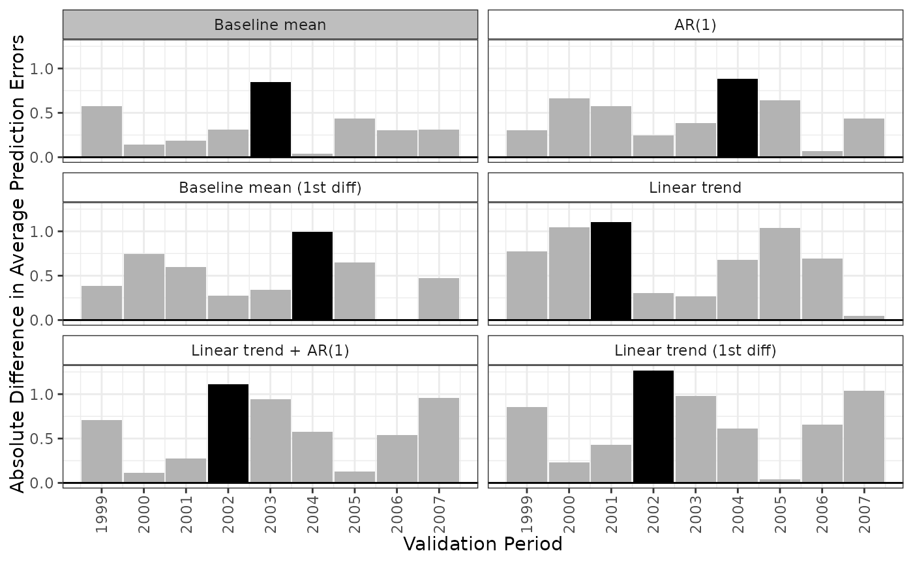
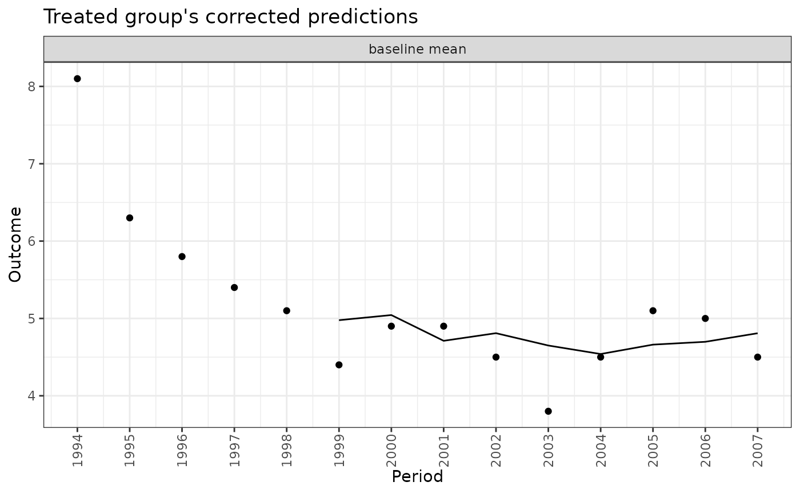

plot() displays the Bayesian model averaging (BMA) weights for each model (computed by apm_fit() as the posterior probability of selection) and the distribution of the difference in average prediction errors.
Usage
# S3 method for class 'apm_pre_fits'
plot(
x,
type = "weights",
abs = TRUE,
ncol = 4L,
clip_at = 15,
model = ".optimal",
...
)Arguments
- x
an
apm_pre_fitsobject; the output of a call toapm_pre().- type
which values to plot: allowable options include
"weights"to plot the BMA weights/posterior probabilities (default),"errors"to plot the difference in average predictions errors for all models across validation periods,"predict"to plot the time series and model predictions for each model, and"corrected"to plot the corrected predictions for the treated group for each model. Abbreviations allowed.- abs
logical; whentype = "errors", whether to plot the differences in average prediction errors in absolute value (TRUE, default) or not (FALSE).- ncol
when
typeis"errors","predict", or"corrected", the number of columns to use to display the plots. Default is 4.- clip_at
when
type = "errors", the value (in robust z-score units) at which to clip the y-axis of the plot to prevent outliers from distorting it. Default is 15. Set toInfto prevent clipping.- model
string; when
type = "predict"ortype = "corrected", the model(s) to plot. Allowable values include".optimal"to plot the model with the smallest maximum absolute difference in average prediction errors,".all"to plot all models (excluding the BMA-weighted predictions), or the names of one or more specific models. Abbreviations allowed.- ...
ignored.
Details
When type = "weights", plot() displays a bar plot with a bar for each model with height equal to the BMA weight/posterior probability of selection for that model. (Note that the plot margins can sometimes cut off the model names; use theme(plot.margins =) after loading ggplot2 to extend the left margin of the plot to ensure all text is visible. Alternatively, the axis text can be rotated using theme(axis.text.x =).)
When type = "errors", plot() displays a lattice of bar plots with a plot for each model displaying the difference in average prediction errors for each validation period. The period with the largest difference in average prediction errors will be shaded black. The model with the smallest maximum absolute difference in average prediction errors will have a gray label.
When type = "predict", plot() displays a lattice of line plots with a plot for each model displaying the observed and predicted outcomes for each validation period under each model. The observed outcomes are displayed as points, while the predicted outcomes are displayed as lines.
When type = "corrected", plot() displays a lattice of line plots with a plot for each model displaying the observed and corrected predictions for the treated group for each validation period under each model. The observed outcomes are displayed as points, while the corrected predictions are displayed as lines. Corrected predictions are computed as the observed outcome in the treated group minus the prediction error in the treated group plus the prediction error in the control group.
See also
apm_pre() to to compute the difference in average prediction errors and BMA weights; ggplot2::geom_col(), which is used to create the plots.
Examples
data("ptpdata")
# Combination of 8 models: 2 baseline formulas,
# 2 families, 2 lags
models <- apm_mod(crude_rate ~ 1,
family = "gaussian",
time_trend = 0:1,
lag = 0:1,
diff_k = 0:1)
models
#> - Model 1: baseline mean
#> crude_rate ~ 1
#> family: gaussian(link = "identity")
#> outcome lag: none
#> outcome diff: none
#> log outcome: no
#> time trend: none
#> unit fixed effects: no
#>
#> - Model 2: AR(1)
#> crude_rate ~ 1
#> family: gaussian(link = "identity")
#> outcome lag: 1
#> outcome diff: none
#> log outcome: no
#> time trend: none
#> unit fixed effects: no
#>
#> - Model 3: baseline mean (1st diff)
#> crude_rate ~ 1
#> family: gaussian(link = "identity")
#> outcome lag: none
#> outcome diff: 1
#> log outcome: no
#> time trend: none
#> unit fixed effects: no
#>
#> - Model 4: linear trend
#> crude_rate ~ 1
#> family: gaussian(link = "identity")
#> outcome lag: none
#> outcome diff: none
#> log outcome: no
#> time trend: linear
#> unit fixed effects: no
#>
#> - Model 5: linear trend + AR(1)
#> crude_rate ~ 1
#> family: gaussian(link = "identity")
#> outcome lag: 1
#> outcome diff: none
#> log outcome: no
#> time trend: linear
#> unit fixed effects: no
#>
#> - Model 6: linear trend (1st diff)
#> crude_rate ~ 1
#> family: gaussian(link = "identity")
#> outcome lag: none
#> outcome diff: 1
#> log outcome: no
#> time trend: linear
#> unit fixed effects: no
# Fit the models to data
fits <- apm_pre(models, data = ptpdata,
group_var = "group",
time_var = "year",
val_times = 1999:2007,
unit_var = "state",
nsim = 50)
#> Fitting models... Done.
#> Simulating to compute BMA weights...
#>
| | 0 % ~calculating
|+ | 2 % ~00s
|++ | 4 % ~00s
|+++ | 6 % ~00s
|++++ | 8 % ~00s
|+++++ | 10% ~00s
|++++++ | 12% ~00s
|+++++++ | 14% ~00s
|++++++++ | 16% ~00s
|+++++++++ | 18% ~00s
|++++++++++ | 20% ~00s
|+++++++++++ | 22% ~00s
|++++++++++++ | 24% ~00s
|+++++++++++++ | 26% ~00s
|++++++++++++++ | 28% ~00s
|+++++++++++++++ | 30% ~00s
|++++++++++++++++ | 32% ~00s
|+++++++++++++++++ | 34% ~00s
|++++++++++++++++++ | 36% ~00s
|+++++++++++++++++++ | 38% ~00s
|++++++++++++++++++++ | 40% ~00s
|+++++++++++++++++++++ | 42% ~00s
|++++++++++++++++++++++ | 44% ~00s
|+++++++++++++++++++++++ | 46% ~00s
|++++++++++++++++++++++++ | 48% ~00s
|+++++++++++++++++++++++++ | 50% ~00s
|++++++++++++++++++++++++++ | 52% ~00s
|+++++++++++++++++++++++++++ | 54% ~00s
|++++++++++++++++++++++++++++ | 56% ~00s
|+++++++++++++++++++++++++++++ | 58% ~00s
|++++++++++++++++++++++++++++++ | 60% ~00s
|+++++++++++++++++++++++++++++++ | 62% ~00s
|++++++++++++++++++++++++++++++++ | 64% ~00s
|+++++++++++++++++++++++++++++++++ | 66% ~00s
|++++++++++++++++++++++++++++++++++ | 68% ~00s
|+++++++++++++++++++++++++++++++++++ | 70% ~00s
|++++++++++++++++++++++++++++++++++++ | 72% ~00s
|+++++++++++++++++++++++++++++++++++++ | 74% ~00s
|++++++++++++++++++++++++++++++++++++++ | 76% ~00s
|+++++++++++++++++++++++++++++++++++++++ | 78% ~00s
|++++++++++++++++++++++++++++++++++++++++ | 80% ~00s
|+++++++++++++++++++++++++++++++++++++++++ | 82% ~00s
|++++++++++++++++++++++++++++++++++++++++++ | 84% ~00s
|+++++++++++++++++++++++++++++++++++++++++++ | 86% ~00s
|++++++++++++++++++++++++++++++++++++++++++++ | 88% ~00s
|+++++++++++++++++++++++++++++++++++++++++++++ | 90% ~00s
|++++++++++++++++++++++++++++++++++++++++++++++ | 92% ~00s
|+++++++++++++++++++++++++++++++++++++++++++++++ | 94% ~00s
|++++++++++++++++++++++++++++++++++++++++++++++++ | 96% ~00s
|+++++++++++++++++++++++++++++++++++++++++++++++++ | 98% ~00s
|++++++++++++++++++++++++++++++++++++++++++++++++++| 100% elapsed=00s
#> Done.
fits
#> An `apm_pre_fits` object
#>
#> - grouping variable: group
#> - unit variable: state
#> - time variable: year
#> - validation times: 1999, 2000, 2001, 2002, 2003, 2004, 2005, 2006, 2007
#> - number of models compared: 6
#> - number of simulation iterations: 50
#>
#> Use `summary()` or `plot()` to examine prediction errors and BMA weights.
plot(fits, type = "weights")
plot(fits, type = "error", ncol = 2)

plot(fits, type = "predict", model = ".optimal")
plot(fits, type = "corrected", model = ".optimal")
